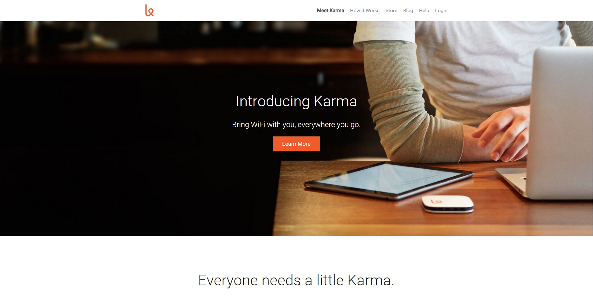

<!DOCTYPE html>
<html lang="en">
<head>
  <meta charset="UTF-8">
  <link rel=stylesheet href="css/styles.css">
  <title>Document</title>
</head>
<body>
  
</body>
</html>

<header class="masthead">
  <p class="masthead-intro">Hi, I'm</p>
  <h1 class="masthead-heading">Joshua!</h1>
</header>
<section class="introduction-section">
  <h1> Introduction</h1>
  <p>I'm a student learning to become a front end web developer. I originally majored in Political Science, which has not worked out well in the job market. I've always enjoyed learning about computers and how they work and I'm excited to learn more about web design!</p>
</section>
<section class="location-section">
  <h1>Where I come from</h1>
  <p>I was born and raised in a small borough north of Pittsburgh Pennsylvania. I still live near Pittsburgh, just in a different area. I attended Penn State University and graduated just a few years ago.</p>
</section>
<section class="questions-section">
  <h1>More About Me</h1>
  <h3>What are your favorite hobbies?</h3>
    <p>I spend several hours on my bike every week and love discovereing a new bike path through the country or just exploring the city. I also play way too many video games in my spare time and I enjoy watching art house and horror films.</p>
  <h3>What is your dream job?</h3>
  <p>Honestly, I'd love to be a video game developer.</p>
  <h3>What music have you been listening to lately?</h3>
  <p>Recently I've been listening to Tame Impala and Arcade Fire, as well as move soundtracks like Interstellar.</p>
</section>
<hr>
  <section class="projects">
    <h1>Projects</h1>
    <ul class="screenshots">
      <li><a href="Images/NYT Hack.jpg"></a>
      </li>
      <li><a href="Images/NYT Hack.jpg">New York Times Front Page Hack</a></li>
    </ul>
    <ul>
    </ul>
    <ul class="screenshots">
      <li><a href="http://jdf5196.github.io/Startup-landing-page-clone/"></a>
      </li>
      <li><a href="http://jdf5196.github.io/Startup-landing-page-clone/">Clone of Karma Homepage</a></li>
    </ul>
  </section>
<footer class="content-footer">
  <p>You can reach me at the following sites:</p>
  <ul class="social">
    <li>
      <a href="https://www.linkedin.com/pub/joshua-francona/b0/189/55a">Linkedin</a></li>
    <li><a href="https://www.facebook.com/joshua.francona">Facebook</a></li>
  </ul>
  <p>Cover Image via <a href="https://unsplash.com/">Unsplash</a>
</footer>